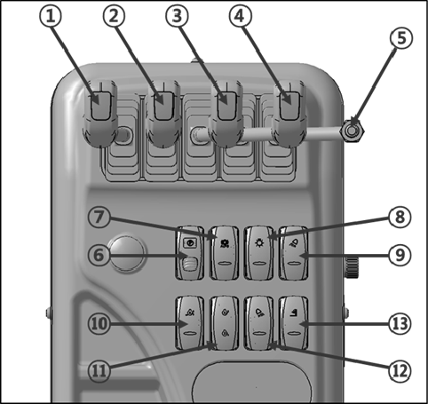
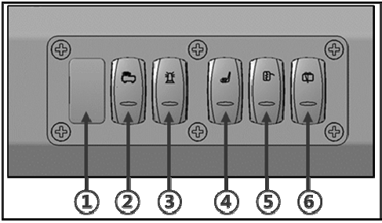

3 The Operator & Switches
Figure 1. [Pilot Valve Box]

- 1. Lift Lever
- 2. Tilt Lever
- 3. Left fork Operation lever
- 4. Right fork Operation lever.
- 5. Auxiliary Operation lever
- 6. Parking Switch
- 7. Auto/Manual Change Switch
- 8. Light Switch
- 9. Front Working Lamp Switch
- 10. Idle On Switch
- 11. Idle Up/Down Switch
- 12. Rear Working Lamp Switch
- 13. Mast Working Lamp Switch
Figure 2. [The Left Side In Cabin]

- 1. Plug(Spare Room)
- 2. Air Compressor Switch
- 3. Strobe Switch
- 4. Seat Heater Switch
- 5. Heating Lay Mirror Switch
- 6. Wiper Switch
Figure 3. [The Right Side In Cabin]

- 1. Plug(Spare Room)
- 2. Plug(Spare Room)
- 3. Plug(Spare Room)
- 4. Plug(Spare Room)
- 5. Economic Switch
- 6. Regeneration(SCR Cleaning) Switch